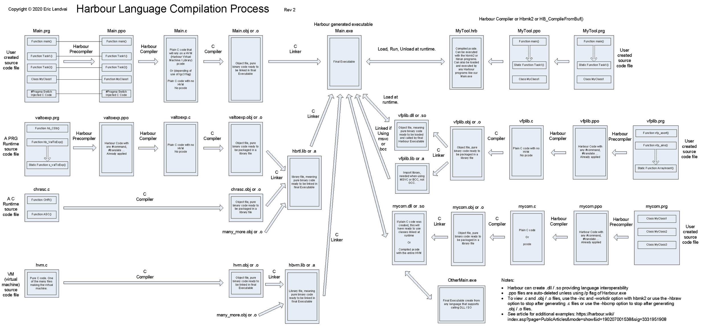
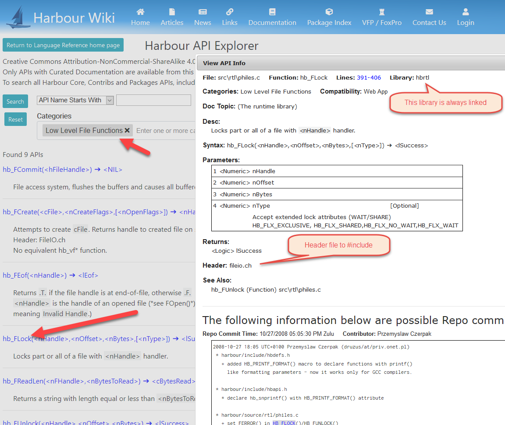
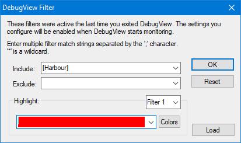
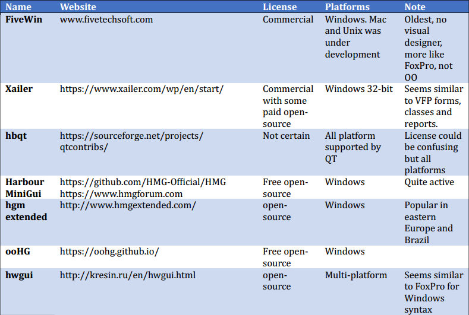
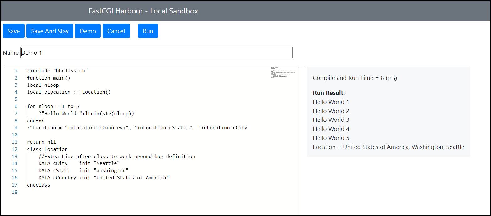

Introduction to Harbour, an Open Source Alternative to VFP
 Author: Eric Lendvai
Author: Eric Lendvai
Table of Contents
- Reference
- About Me
- Introduction
- Installing Harbour
- Using VSCODE to edit and debug programs
- Resources for learning about Harbour
- Features and syntax differences between VFP and Harbour
- GUI development on Windows, Unix, Mac
- Interop between Harbour and VFP
- Web Development with Harbour
- A Harbour Playground
- Intro to the Harbour_VFP repo
- Intro to a Harbour ORM to the rescue
- Where to go from here
Reference
This article is a republishing of the "White paper" presented at the Virtual Fox Fest 2020 Conference.
The presentation can be viewed on YouTube
Copyright 2020, Eric Lendvai
Harbour
is a compiler which generates pure C code from xBase-like programs, but
unlike other compilers, you can still use macros (evals) and do dynamic
linking. If you want to develop with a language that is similar to VFP,
is open source, and can still access VFP tables and SQL backends,
Harbour is the solution. With Harbour, we have access to its source
code, we don't have to be worried about a single vendor controlling its
future, and it is 100% free. Harbour was in development since before
1999 as a Clipper clone. Now it is incredibly stable, and it allows you
to create apps that can run not only on Windows, but also on Unix, Mac,
and Android. You can even create 64-bit apps; break the 2Gb file size
limit, including DBFs (256 TB); and create multi-threaded apps.
About Me
I
received a formal education in computer science from the Brussels
University a long time ago… it was the first year the university stopped
using punch cards and was before Object-oriented Programming existed,
and of course, the internet. I was a consultant for most of my 30+ year
career, and I recently joined a large company in Seattle as a Senior
Software Development Engineer.
As a consultant,
I mostly used FoxPro, Visual FoxPro and Python, and for more than 17
years, I’ve developed web applications. Between the two main
applications I developed (a complete desktop application/ERP for one of
the largest electrical contractors in the US and a web application with
over 2,100 web pages), I also had the role of a Database Architect
designing schemas containing over 1,000 tables (fully-normalized).
While
an employee for three years at a San Diego-based company which provided
solutions for law firms, most of my development was using Harbour. As
one of their team members, I was responsible for becoming an expert with
all the modern engineering systems and tools such as Git, cloud
computing, agile methodology.
As a VFP
enthusiast, I developed using FoxPro 1 to VFP 9 and chaired “The FoxPro
Developers Network of San Diego” for 16 years. To preview our past
presentation topics: https://www.foxdevsd.org/index.asp?page=MeetingPast
As a Harbour community member, I created a web site dedicated to the Harbour computer language: https://harbour.wiki
I published multiple technical articles on harbour.wiki, which I will refer to during this session.
I
also create several Harbour specific repos on GitHub such as Harbour
FastCGI (Framework to create FastCGI apps in Harbour), Harbour ORM
(Currently supporting MySQL, MariaDB and PostgreSQL), and Harbour_VFP
(Adding some VFP features to Harbour)
For more information about me and to connect, please visit: https://www.linkedin.com/in/ericlendvai/
Introduction
What is Harbour?
Harbour is an open-source implementation of a xBase computer language, that is compatible on any platforms supporting C based applications, meaning MS Windows, Mac OS, Linux, Unix, iOS, and can generate 32-bit and 64-bit applications and libraries.
xBase is the generic term for all programming languages that derive from the original dBASE programming language and database formats (https://en.wikipedia.org/wiki/XBase) that was first released in 1979. Harbour is classified as a 4GL language since its compiler generates pure C source code. Harbour-generated applications are self-contained, meaning they do not require external runtime libraries. Harbour programs can be compiled to use an embedded VM (virtual machine including in final EXE), or without any VM (could run faster but bigger executable). Harbour has an embedded “stand-by” compiler that is similar to VFP’s macros.
Harbour can be classified as an object-oriented, functional and data-centric language that also supports procedures and functions. Harbour can also generate multi-threaded applications, such as web and socket servers. Virtually any C libraries can be embedded with Harbour.
Harbour is an open-source implementation of a xBase computer language, that is compatible on any platforms supporting C based applications, meaning MS Windows, Mac OS, Linux, Unix, iOS, and can generate 32-bit and 64-bit applications and libraries.
xBase is the generic term for all programming languages that derive from the original dBASE programming language and database formats (https://en.wikipedia.org/wiki/XBase) that was first released in 1979. Harbour is classified as a 4GL language since its compiler generates pure C source code. Harbour-generated applications are self-contained, meaning they do not require external runtime libraries. Harbour programs can be compiled to use an embedded VM (virtual machine including in final EXE), or without any VM (could run faster but bigger executable). Harbour has an embedded “stand-by” compiler that is similar to VFP’s macros.
Harbour can be classified as an object-oriented, functional and data-centric language that also supports procedures and functions. Harbour can also generate multi-threaded applications, such as web and socket servers. Virtually any C libraries can be embedded with Harbour.
Where does it come from?
The original Harbour implementation was started in 1999 as a 100% clone of Clipper, a defunct language that was a compiler version of dBase. During the last 20 years, Harbour went through majors changes, in part due to a forked version called xHarbour. Most features of xHarbour, a commercial fork, are now re-implemented in Harbour, for the exception of a form builder (closer to FoxPro for Windows than VFP). Most of the development of Harbour was done by a handful of extremely skilled C developers. All the source code and contributor information can be found on GitHub at https://github.com/harbour/core
The original Harbour implementation was started in 1999 as a 100% clone of Clipper, a defunct language that was a compiler version of dBase. During the last 20 years, Harbour went through majors changes, in part due to a forked version called xHarbour. Most features of xHarbour, a commercial fork, are now re-implemented in Harbour, for the exception of a form builder (closer to FoxPro for Windows than VFP). Most of the development of Harbour was done by a handful of extremely skilled C developers. All the source code and contributor information can be found on GitHub at https://github.com/harbour/core
How come most people have never heard of it?
The Harbour community is comprised of developers from around the world; this is an open-source project with no corporate backing. It has suffered due to conflict between developers wanting to remain a 100% Clipper clone, and those wanting to evolve the language (mainly the xHarbour supporters). I hadn’t heard much of Harbour until I began working for a mid-to-large sized company that relied 100% on it for its core product. I only knew of Xbase++ by Alaska Software. I discovered that Harbour had virtually everything Xbase++ had except for easy web development (but it started to as of early 2020). Unlike Xbase++, Harbour is open-source, all operating systems, and 64-bit compatible.
The Harbour community is comprised of developers from around the world; this is an open-source project with no corporate backing. It has suffered due to conflict between developers wanting to remain a 100% Clipper clone, and those wanting to evolve the language (mainly the xHarbour supporters). I hadn’t heard much of Harbour until I began working for a mid-to-large sized company that relied 100% on it for its core product. I only knew of Xbase++ by Alaska Software. I discovered that Harbour had virtually everything Xbase++ had except for easy web development (but it started to as of early 2020). Unlike Xbase++, Harbour is open-source, all operating systems, and 64-bit compatible.
How does it compare to VFP?
VFP is one of the most amazing languages I had the chance to work with, and I did/do use many of them. VFP 9 is closed source code, not free, and can only run on MS Windows. Only Windows 32-bit applications can be generated (using original system). But VFP has an incredible Form and Class builder, that supports visual inheritance. VFP has native a SQL engine embedded in the language (which was the foundation for MS-SQL). VFP comes with its own CLI (command window) and a decent editor.
Harbour does not have a built-in Form or Class designer. There are multiple open-source and commercial packages that can be used with Harbour core. But none have visual inheritance. Harbour is in the same state as Python: a great language but no easy solution for desktop/UI development. But since most new products are now web apps, so long as you generate HTML, CSS, JS, you should be fine. Will review more on this subject later.
With regard to embedded SQL, I recently released an open-source Harbour-ORM which adds easy support to MariaDB, MySQL and PostgreSQL, and has in-memory tables (VFP cursors). I will add in-memory SQLite support soon or push-cursor-to-server functionality to allow subsequent SQL commands.
As far as the Integrated Development Environment (IDE) for developing applications, the best choice for Harbour is Visual Studio Code (VSCODE). There is an open-source VSCODE extension for Harbour, which brings support for debugging and IntelliSense. VSCODE has so many amazing extensions which will transform it from an editor to a rich IDE.
As far as comparing the languages, they are fairly similar, but in many areas, Harbour has a richer set of options. And where some features are missing, they can be added fairly easily. I have a GitHub repo where I am adding VFP features to Harbour. Harbour does not have a report writer, but you could consume VFP object wrapper to your reports. Harbour is more of a solution to write new Web apps or to extend VFP by creating Harbour COM objects. Harbour, like Python 3, has full UTF8 support. This is crucial feature for when you are accessing UTF8 encoded SQL backends.
One last important note: Harbour-generated programs are MUCH faster than VFP’s. Harbour programs are C programs, so speed differences can be of a factor of ten to several hundred times faster. For example, on a single core I7 laptop Linux VM, using Harbour FastCGI under Lighttpd, we get over 2,000 responses per seconds for a generic “hello world” web page, versus 15 responses per seconds under a VFP/ASP/IIS solution.
VFP is one of the most amazing languages I had the chance to work with, and I did/do use many of them. VFP 9 is closed source code, not free, and can only run on MS Windows. Only Windows 32-bit applications can be generated (using original system). But VFP has an incredible Form and Class builder, that supports visual inheritance. VFP has native a SQL engine embedded in the language (which was the foundation for MS-SQL). VFP comes with its own CLI (command window) and a decent editor.
Harbour does not have a built-in Form or Class designer. There are multiple open-source and commercial packages that can be used with Harbour core. But none have visual inheritance. Harbour is in the same state as Python: a great language but no easy solution for desktop/UI development. But since most new products are now web apps, so long as you generate HTML, CSS, JS, you should be fine. Will review more on this subject later.
With regard to embedded SQL, I recently released an open-source Harbour-ORM which adds easy support to MariaDB, MySQL and PostgreSQL, and has in-memory tables (VFP cursors). I will add in-memory SQLite support soon or push-cursor-to-server functionality to allow subsequent SQL commands.
As far as the Integrated Development Environment (IDE) for developing applications, the best choice for Harbour is Visual Studio Code (VSCODE). There is an open-source VSCODE extension for Harbour, which brings support for debugging and IntelliSense. VSCODE has so many amazing extensions which will transform it from an editor to a rich IDE.
As far as comparing the languages, they are fairly similar, but in many areas, Harbour has a richer set of options. And where some features are missing, they can be added fairly easily. I have a GitHub repo where I am adding VFP features to Harbour. Harbour does not have a report writer, but you could consume VFP object wrapper to your reports. Harbour is more of a solution to write new Web apps or to extend VFP by creating Harbour COM objects. Harbour, like Python 3, has full UTF8 support. This is crucial feature for when you are accessing UTF8 encoded SQL backends.
One last important note: Harbour-generated programs are MUCH faster than VFP’s. Harbour programs are C programs, so speed differences can be of a factor of ten to several hundred times faster. For example, on a single core I7 laptop Linux VM, using Harbour FastCGI under Lighttpd, we get over 2,000 responses per seconds for a generic “hello world” web page, versus 15 responses per seconds under a VFP/ASP/IIS solution.
How does it compare to other languages?
I wrote an article about this subject on the Harbour Wiki, which I created and host:
“Comparing computer languages, Harbour, VFP and others”
https://harbour.wiki/index.asp?page=PublicArticles&mode=show&id=190207000911&sig=1052597288
I recommend visiting the link at the top of the article’s web page labeled “Google user forum discussion about this article”. You’ll find extra information and comments/fixes about the article and notes from some X# users.
I wrote an article about this subject on the Harbour Wiki, which I created and host:
“Comparing computer languages, Harbour, VFP and others”
https://harbour.wiki/index.asp?page=PublicArticles&mode=show&id=190207000911&sig=1052597288
I recommend visiting the link at the top of the article’s web page labeled “Google user forum discussion about this article”. You’ll find extra information and comments/fixes about the article and notes from some X# users.
What could Harbour be used for?
Since Harbour generates pure C code and has a powerful preprocessor, any other C code and libraries can be merged in. You can even write C code inside your PRG files.
Harbour can be used to create Desktop apps, Web apps, COM objects (32-bit and 64-bit), and device-drivers. I even saw someone compile Harbour with Objective-C and create a native iOS app, and another person created a WebAssembly.
In my opinion, Harbour can be a phenomenal tool to create web apps and microservices.
Currently GO is becoming an increasingly popular programming language for creating microservices, especially with large companies in Seattle. Harbour has all the features of GO and all the object-oriented and data-centric features as well.
Since Harbour generates pure C code and has a powerful preprocessor, any other C code and libraries can be merged in. You can even write C code inside your PRG files.
Harbour can be used to create Desktop apps, Web apps, COM objects (32-bit and 64-bit), and device-drivers. I even saw someone compile Harbour with Objective-C and create a native iOS app, and another person created a WebAssembly.
In my opinion, Harbour can be a phenomenal tool to create web apps and microservices.
Currently GO is becoming an increasingly popular programming language for creating microservices, especially with large companies in Seattle. Harbour has all the features of GO and all the object-oriented and data-centric features as well.
How does Harbour work?
Harbour is a language and a series of tools. Its syntax is originally from Clipper but has evolved to include all other modern language features like OOP, Hash Arrays (Python Dictionaries), UTF8 support, multi-threading, multi-OS support. Harbour has its root in C, which means that most of the C tooling is also in Harbour. It has a preprocessor, a compiler, a make tool (optional) and a debugger (replaceable). It does not have a CLI, but Visual Code can be used to facilitate rapid prototyping and debugging.
1. The Harbour preprocessor takes PRG files and generates PPO files which are still PRG-like files, but are transformed via preprocessor directives. As in C, those directives are commands defined with a leading “#’ character. We have our typical #define, #include, #if, #elif,#else, #endif, #ifdef, #ifndef. But we have some amazing new directives like #xcommand, #xtranslate that can be used to redefine the language itself. I even heard of a developer that transformed COBOL code into Harbour code. This is also a power set of directives that can help auto-translate VFP command and functions to Harbour equivalents or some newly created functions that would behave like VFP. For example, I implemented the SCAN/ENDSCAN VFP structure using these directives that will call a new VFP_ScanStack() function.
To view examples: https://github.com/EricLendvai/Harbour_VFP/blob/master/hb_vfp.ch
Then there is #pragma directive. This will tell the compiler to behave differently. I listed it in this section, since it looks like a preprocessor directive, but it is used by the Harbour compiler itself. This directive allows you to include actual C code in the middle of your PRG file.
The following is an example of a hybrid Harbour and C code PRG file:
#define MAXLOOP 5
Function Main()
local l_loop
MyOutputDebugString("[Harbour] Starting Hello World")
FOR l_loop := 1 to MAXLOOP
?"Hello Harbour " + alltrim(str(l_loop))
IF l_loop == 3
AltD() // Same as “SET STEP ON” of VFP
?"Paused Debugger"
ENDIF
END
MyOutputDebugString("[Harbour] Completed Hello World")
RETURN nil
//========================================
#pragma BEGINDUMP
#include <windows.h>
#include "hbapi.h"
HB_FUNC( MYOUTPUTDEBUGSTRING )
{
OutputDebugString( hb_parc(1) );
}
#pragma ENDDUMP
The preprocessor will convert command statements, such as “APPEND BLANK” to a native Harbour function: in this case, “dbAppend()”.
2. The Harbour compiler takes PPO files and generates C files. The same C compiler that was used to build your local copy of Harbour itself will be called to build .obj files, which are actual binary object files.
There are two methodologies for Harbour to create the C source code files. One, the most common, is to create C code that has some PCODE in it, which are basically a series of C arrays with numeric values. This method relies on a Harbour Virtual Machine (HVM), and Harbour Runtime Library (HRL). But all of this gets linked inside a single .EXE or .DLL (or .SO for Linux) you generate with Harbour. The second method is to create C code that does not rely on a HVM and creates all pure C code that can still use the HRL. VFP uses a PCODE-only approach by creating FXP files, which then can get packaged in .APP and .EXE or .DLL. But unlike VFP, Harbour does not rely on VFP runtime files (.dlls). You may wonder why even have a PCODE method in Harbour? The generated C code is smaller, while the source PRGs are larger.
Harbour is a language and a series of tools. Its syntax is originally from Clipper but has evolved to include all other modern language features like OOP, Hash Arrays (Python Dictionaries), UTF8 support, multi-threading, multi-OS support. Harbour has its root in C, which means that most of the C tooling is also in Harbour. It has a preprocessor, a compiler, a make tool (optional) and a debugger (replaceable). It does not have a CLI, but Visual Code can be used to facilitate rapid prototyping and debugging.
1. The Harbour preprocessor takes PRG files and generates PPO files which are still PRG-like files, but are transformed via preprocessor directives. As in C, those directives are commands defined with a leading “#’ character. We have our typical #define, #include, #if, #elif,#else, #endif, #ifdef, #ifndef. But we have some amazing new directives like #xcommand, #xtranslate that can be used to redefine the language itself. I even heard of a developer that transformed COBOL code into Harbour code. This is also a power set of directives that can help auto-translate VFP command and functions to Harbour equivalents or some newly created functions that would behave like VFP. For example, I implemented the SCAN/ENDSCAN VFP structure using these directives that will call a new VFP_ScanStack() function.
To view examples: https://github.com/EricLendvai/Harbour_VFP/blob/master/hb_vfp.ch
Then there is #pragma directive. This will tell the compiler to behave differently. I listed it in this section, since it looks like a preprocessor directive, but it is used by the Harbour compiler itself. This directive allows you to include actual C code in the middle of your PRG file.
The following is an example of a hybrid Harbour and C code PRG file:
#define MAXLOOP 5
Function Main()
local l_loop
MyOutputDebugString("[Harbour] Starting Hello World")
FOR l_loop := 1 to MAXLOOP
?"Hello Harbour " + alltrim(str(l_loop))
IF l_loop == 3
AltD() // Same as “SET STEP ON” of VFP
?"Paused Debugger"
ENDIF
END
MyOutputDebugString("[Harbour] Completed Hello World")
RETURN nil
//========================================
#pragma BEGINDUMP
#include <windows.h>
#include "hbapi.h"
HB_FUNC( MYOUTPUTDEBUGSTRING )
{
OutputDebugString( hb_parc(1) );
}
#pragma ENDDUMP
The preprocessor will convert command statements, such as “APPEND BLANK” to a native Harbour function: in this case, “dbAppend()”.
2. The Harbour compiler takes PPO files and generates C files. The same C compiler that was used to build your local copy of Harbour itself will be called to build .obj files, which are actual binary object files.
There are two methodologies for Harbour to create the C source code files. One, the most common, is to create C code that has some PCODE in it, which are basically a series of C arrays with numeric values. This method relies on a Harbour Virtual Machine (HVM), and Harbour Runtime Library (HRL). But all of this gets linked inside a single .EXE or .DLL (or .SO for Linux) you generate with Harbour. The second method is to create C code that does not rely on a HVM and creates all pure C code that can still use the HRL. VFP uses a PCODE-only approach by creating FXP files, which then can get packaged in .APP and .EXE or .DLL. But unlike VFP, Harbour does not rely on VFP runtime files (.dlls). You may wonder why even have a PCODE method in Harbour? The generated C code is smaller, while the source PRGs are larger.
3. The Make tool. To do the final building of a program or library, a linker is needed. The standard C linker can be called. All of these steps can be executed via a MAKEFILE.
Luckily one of the main Harbour contributors created a Harbour-specific make tool instead that automates all building steps. It is called the hbmk2 tool and will use a .HBP file (a text file) as the equivalent of a VFP project file.
Alternatively, Harbour can also generate pseudo-PCODE files, similarly to VFP .FXP files, that are called .HRB files. But those files may not include embedded C code – only pure Harbour source code.
To clarify, there are two type of PCODE in Harbour: one inside C-generated files and one with actual PCODE files with the .HRB extension (not C code).
All of this is more complicated than VFP or other modern languages. But this also provides more options and power to Harbour. Since Harbour is a compiler, most source code errors are detected during the compilation process instead of at runtime.
I created a flowchart that shows the Harbour Language Compilation Process. To view this chart at full scale: https://harbour.wiki
From the home page go to “Click here to review the Harbour Language Compilation Process Diagram.”

Installing Harbour
I wrote an article about this subject on the Harbour Wiki, “How to Install Harbour on Windows”
https://harbour.wiki/index.asp?page=PublicArticles&mode=show&id=190129210053&sig=7790451073
You can find an article on the same wiki from another author, “How to install Harbour on Ubuntu”
https://harbour.wiki/index.asp?page=PublicArticles&mode=show&id=191217205049&sig=1012240743
Alternatively, you can download a pre-compiled version of Harbour builds with the latest Mingw64 C compiler from GitHub CI (Continuous Integration) engine (workflow) at https://github.com/EricLendvai/Harbour_Builds
which came originally from https://github.com/FiveTechSoft/Harbour_builder/
The version on my personal repo has more documentation in the yml definition file.
But you still need to install Mingw locally to be able to compile your own programs.
https://harbour.wiki/index.asp?page=PublicArticles&mode=show&id=190129210053&sig=7790451073
You can find an article on the same wiki from another author, “How to install Harbour on Ubuntu”
https://harbour.wiki/index.asp?page=PublicArticles&mode=show&id=191217205049&sig=1012240743
Alternatively, you can download a pre-compiled version of Harbour builds with the latest Mingw64 C compiler from GitHub CI (Continuous Integration) engine (workflow) at https://github.com/EricLendvai/Harbour_Builds
which came originally from https://github.com/FiveTechSoft/Harbour_builder/
The version on my personal repo has more documentation in the yml definition file.
But you still need to install Mingw locally to be able to compile your own programs.
Using VSCODE to edit and debug programs
I
wrote an article about this subject on the Harbour Wiki, “Developing
and Debugging Harbour Programs with VSCODE (Visual Studio Code)”
https://harbour.wiki/index.asp?page=PublicArticles&mode=show&id=190401174818&sig=6893630672
To make your life easier, I recommend installing and using VSCODE. Many veteran Harbour developers use generic text editors and a text-based Harbour debugger. But for VFP developers, not using VSCODE would be like going back to coding in FoxBase (Before VFP and FoxPro).
To further test your Harbour installation, feel free to download and use the repo:
https://github.com/EricLendvai/Harbour_Samples
https://harbour.wiki/index.asp?page=PublicArticles&mode=show&id=190401174818&sig=6893630672
To make your life easier, I recommend installing and using VSCODE. Many veteran Harbour developers use generic text editors and a text-based Harbour debugger. But for VFP developers, not using VSCODE would be like going back to coding in FoxBase (Before VFP and FoxPro).
To further test your Harbour installation, feel free to download and use the repo:
https://github.com/EricLendvai/Harbour_Samples
Resources for learning about Harbour
As I’ve referenced to earlier, I highly suggest visiting https://harbour.wiki
You find articles, links and documentation about Harbour. Additionally, you can view and post messages to a large community of Harbour developers at the following google forum:
https://groups.google.com/forum/#!forum/harbour-users
To search past posts, I recommend using the “Query Harbour Google Groups”
https://harbour.wiki/index.asp?page=PublicSearchGoogleGroups
Please note the official Harbour website https://harbour.github.io/ is defunct.
Example for looking up Harbour functions (API)
You find articles, links and documentation about Harbour. Additionally, you can view and post messages to a large community of Harbour developers at the following google forum:
https://groups.google.com/forum/#!forum/harbour-users
To search past posts, I recommend using the “Query Harbour Google Groups”
https://harbour.wiki/index.asp?page=PublicSearchGoogleGroups
Please note the official Harbour website https://harbour.github.io/ is defunct.
Example for looking up Harbour functions (API)

Features and syntax differences between VFP and Harbour
This section will highlight the major differences between VFP and Harbour. There is no particular order to the list below.
One of the best ways to see what Harbour code looks like is to browse my Harbour-specific repos at https://github.com/EricLendvai
There is no “SET PROCEDURE” command in Harbour. Any PROCEDURE, FUNCTION or CLASS definition in any of the PRG and C files that get compiled and linked together can be accessed from any place in your program. If you want to make a FUNCTION or PROCEDURE reachable from within the PRG they are defined in, add the STATIC option. The same goes if you want to restrict the creation of objects to a CLASS inside a PRG file, the STATIC option will be required. This behavior of global scope and name-spacing (local PRG) is similar to C.
Programs created with Harbour do not require a set of external runtime files. PRG files compile down to object files (binary), which can be grouped in library files and then finally linked as an executable or other library file. All the Harbour functions are grouped in library files. You have to explicitly tell the Harbour compiler to “bring in” these libraries to assemble your final program. For example, if you create web apps, you would not need the UI engine, or if you create an encryption engine, you would not link all the data-centric features. Most libraries also come with a header include file (.ch) that would have #define, #xcommand, #xtransform, that you would need to call in your PRG files via the #include directive. Luckily the Harbour hbmk2 make program will help you assemble those libraries, and on Harbour.wiki, the “Harbour API Explorer” or “Harbour Source Code Explorer” web pages can help you identify which header and library files to use. By default the HVM (Harbour Virtual Machine) library file will also be linked in your EXE or DLL.
Harbour classes are defined differently. For example, you would define all the methods first, then you can implement them anywhere in your PRG. There are techniques you can use to split class implementation among multiple PRG files. Properties can also be defined at the level of the class, instead of just an object. But there is no constructor method being automatically called, like an “init” method. The solution is to create a constructor function to wrap the creation of objects. For some extensive code samples, go to https://github.com/EricLendvai/Harbour_ORM
A good place to see the help information: http://www.kresin.ru/en/hrbfaq_3.html#Doc3
Harbour Arrays are single dimension. But each cell of an array can contain another array. When using this technique, there are no limits to the dimension of your arrays. To search in a multi-dimension array, you would use the hb_AScan function with a codeblock function. This method of searching is more powerful than VFP’s ASCAN() function, and it already returns the row number, so you would not need to use the AELEMENT() function.
Hash Arrays are basically the equivalent of Python dictionaries. Instead of using integers for the position in your array, you can use any text. This creates the “key” / “Value” concept.
And since array elements can include other arrays, you could for example refer to a cell as follows: MyArray[<cTableName>][<cFieldName>][2]
A good place to see the help information: http://www.kresin.ru/en/hrbfaq_3.html#Doc8
Make sure you use square brackets instead of parenthesis.
To refer to a field between the alias and field names, use the symbols “->” versus “.”
For example: clients->firstname
To help the compiler resolve tokens, if you try to access a field from the current work area by using the field name, use the keyword FIELD. You also could use a compiler directive to tell which token are fields, but using the FIELD fake alias name works better.
For example: field->firstname
Assignments are done using “:=” instead of “=” . In some cases, you can still use “=”, but to make it easier, always use “:=”.
You don’t need to use the REPLACE command to assign a value to a field. You can use the regular “:=” syntax.
For example: clients->firstname := “Eric”
To refer to a property or method use a “:” instead of “.” .
For example: MyObject:MyProperty or MyObject:MyMethod(parameters)
Instead of using “this”, use “::”
Instead of “WITH” use “WITH OBJECT”.
Harbour thinks of Nulls as empty strings. So hb_IsNull() will test for a zero-length variable.
Use hb_IsNil() to test for what in VFP we would use ISNULL().
One of the best ways to see what Harbour code looks like is to browse my Harbour-specific repos at https://github.com/EricLendvai
There is no “SET PROCEDURE” command in Harbour. Any PROCEDURE, FUNCTION or CLASS definition in any of the PRG and C files that get compiled and linked together can be accessed from any place in your program. If you want to make a FUNCTION or PROCEDURE reachable from within the PRG they are defined in, add the STATIC option. The same goes if you want to restrict the creation of objects to a CLASS inside a PRG file, the STATIC option will be required. This behavior of global scope and name-spacing (local PRG) is similar to C.
Programs created with Harbour do not require a set of external runtime files. PRG files compile down to object files (binary), which can be grouped in library files and then finally linked as an executable or other library file. All the Harbour functions are grouped in library files. You have to explicitly tell the Harbour compiler to “bring in” these libraries to assemble your final program. For example, if you create web apps, you would not need the UI engine, or if you create an encryption engine, you would not link all the data-centric features. Most libraries also come with a header include file (.ch) that would have #define, #xcommand, #xtransform, that you would need to call in your PRG files via the #include directive. Luckily the Harbour hbmk2 make program will help you assemble those libraries, and on Harbour.wiki, the “Harbour API Explorer” or “Harbour Source Code Explorer” web pages can help you identify which header and library files to use. By default the HVM (Harbour Virtual Machine) library file will also be linked in your EXE or DLL.
Harbour classes are defined differently. For example, you would define all the methods first, then you can implement them anywhere in your PRG. There are techniques you can use to split class implementation among multiple PRG files. Properties can also be defined at the level of the class, instead of just an object. But there is no constructor method being automatically called, like an “init” method. The solution is to create a constructor function to wrap the creation of objects. For some extensive code samples, go to https://github.com/EricLendvai/Harbour_ORM
A good place to see the help information: http://www.kresin.ru/en/hrbfaq_3.html#Doc3
Harbour Arrays are single dimension. But each cell of an array can contain another array. When using this technique, there are no limits to the dimension of your arrays. To search in a multi-dimension array, you would use the hb_AScan function with a codeblock function. This method of searching is more powerful than VFP’s ASCAN() function, and it already returns the row number, so you would not need to use the AELEMENT() function.
Hash Arrays are basically the equivalent of Python dictionaries. Instead of using integers for the position in your array, you can use any text. This creates the “key” / “Value” concept.
And since array elements can include other arrays, you could for example refer to a cell as follows: MyArray[<cTableName>][<cFieldName>][2]
A good place to see the help information: http://www.kresin.ru/en/hrbfaq_3.html#Doc8
Make sure you use square brackets instead of parenthesis.
To refer to a field between the alias and field names, use the symbols “->” versus “.”
For example: clients->firstname
To help the compiler resolve tokens, if you try to access a field from the current work area by using the field name, use the keyword FIELD. You also could use a compiler directive to tell which token are fields, but using the FIELD fake alias name works better.
For example: field->firstname
Assignments are done using “:=” instead of “=” . In some cases, you can still use “=”, but to make it easier, always use “:=”.
You don’t need to use the REPLACE command to assign a value to a field. You can use the regular “:=” syntax.
For example: clients->firstname := “Eric”
To refer to a property or method use a “:” instead of “.” .
For example: MyObject:MyProperty or MyObject:MyMethod(parameters)
Instead of using “this”, use “::”
Instead of “WITH” use “WITH OBJECT”.
Harbour thinks of Nulls as empty strings. So hb_IsNull() will test for a zero-length variable.
Use hb_IsNil() to test for what in VFP we would use ISNULL().
The Empty(xValue) function works the same in VFP as in Harbour except when testing for NIL /NULL.
In VFP Empty(NULL) returns false; in Harbour Empty(NIL) returns true.
In VFP Empty(NULL) returns false; in Harbour Empty(NIL) returns true.
Harbour does not support NIL values in default, so loading a NIL field value becomes an empty value. Use the Harbour_ORM project I created instead to work around the NIL(NULL) support.
Instead of “and” / “or” use “.and.” “.or.”
Harbour has the concept of codeblocks, which are similar to Lambda functions that are precompiled as PCODE. For VFP developers, we can avoid them most of the time. They are used in many UI libraries for searching and looping. I will create a full article about this powerful feature later.
Calling a command by its first four characters only is not properly supported; use Alltrim() instead of allt().
In addition to PRIVATE, PUBLIC and LOCAL variables, Harbour also has STATIC variables. These are fantastic. Values in these variables will remain between function calls – great for counters and storing state.
The LOCAL command line also allows you to set an initial value.
For example: Local dToday := date()
The default unit of time is 1 day, not 1 second. If you store in two variables the current DATETIME(), the difference would be in days. To work around that, you could use the following preprocessor directive to make a GetTimeDeltaInMs function available anywhere in your code: #xtranslate GetTimeDeltaInMs(<DateTime1>,<DateTime2>) => (<DateTime2>-<DateTime1>)*(24*3600*1000)
Harbour will support all C style assignments, like: “+=”
For example: cHtml += “<div id=’hello’>”
Instead of “SET STEP ON” use “AltD()”
Binding files and table-bound inside executables can be done easily in VFP through the use of a project (.PJX). To achieve this feature in Harbour, you either have to use a #pragma (limited to 16Mb) or use a C workaround like the one provided by https://github.com/graphitemaster/incbin
At this point, I am not aware of any simple binding for DBF+FPT+CDX. The easiest would be to create an in-memory table, and in your code, execute all the needed APPEND/REPLACE.
The “TEXT TO” / “ENDTEXT” commands can be substituted using the following:
#pragma __text|<v>+=%s+hb_eol();<v>:=""
But the text merging feature “<<” + ”>>” needs to be done via string replaces.
Aside from the typical Harbour debuggers, like the one included when using VSCODE, in MS Windows, we can also use the DebugView tool. I recommend using the following filter settings:

So
long as you prefix your messages with the string “[Harbour]”, you will
only view your messages, and not the ones generated by Windows and other
applications.
Harbour has a Replaceable Database Driver (RDD) engine. This means you are not limited to the DBF/DBT/NDX files, and you can also use VFP tables like DBF/FPT/CDX. We can even create our own RDD library to access other formats. Imagine using APPEND/REPLACE/SKIP/GOTO/LOCATE on non DBF files.
Reverse engineering a Harbour-generated program is almost impossible when compiled without the use of the HVM (Harbour Virtual Machine). But plain text in source code can be detected (via hex editor) unless the following obfuscation technique is used:
#pragma TEXTHIDDEN(1)
cPassword := “Some secret I want to obfuscate”
#pragma TEXTHIDDEN(0)
With regard to system capacity, when using Harbour in 64-bit mode, any files, including DBF files, can exceed the 2GB file size limit. The number of rows is still restricted to 2^^10 due to file format specifications. Tables and index files are not compatible with VFP in this case. PROCEDURE and FUNCTION definitions are not limited to 64Kb (supposedly neither in VFP, but it creates memory leaks). String length in source code is virtually limitless.
Harbour has a Replaceable Database Driver (RDD) engine. This means you are not limited to the DBF/DBT/NDX files, and you can also use VFP tables like DBF/FPT/CDX. We can even create our own RDD library to access other formats. Imagine using APPEND/REPLACE/SKIP/GOTO/LOCATE on non DBF files.
Reverse engineering a Harbour-generated program is almost impossible when compiled without the use of the HVM (Harbour Virtual Machine). But plain text in source code can be detected (via hex editor) unless the following obfuscation technique is used:
#pragma TEXTHIDDEN(1)
cPassword := “Some secret I want to obfuscate”
#pragma TEXTHIDDEN(0)
With regard to system capacity, when using Harbour in 64-bit mode, any files, including DBF files, can exceed the 2GB file size limit. The number of rows is still restricted to 2^^10 due to file format specifications. Tables and index files are not compatible with VFP in this case. PROCEDURE and FUNCTION definitions are not limited to 64Kb (supposedly neither in VFP, but it creates memory leaks). String length in source code is virtually limitless.
GUI development on Windows, Unix, Mac
Nothing
in my experience beats the UI development speed of VFP for Windows
32-bit desktop applications. VFP has a Visual Form and Class designer
with Visual Inheritance, meaning that regular Object-Oriented
inheritance can be graphically designed. And as developers, we can
create Builders which can be used to easily manipulate Properties,
Events and Methods (PEM) in the Form designer.
But the problem is it only works for Windows 32-bit apps. If you need to break the memory restrictions and /or want to create desktop apps also for Linux and Mac OS, you need to leave VFP. Harbour does not have a native graphical user interface, but it can consume any number of them. Here is a list of the best-known ones:
But the problem is it only works for Windows 32-bit apps. If you need to break the memory restrictions and /or want to create desktop apps also for Linux and Mac OS, you need to leave VFP. Harbour does not have a native graphical user interface, but it can consume any number of them. Here is a list of the best-known ones:

Web-based technologies such as HTML and CSS can be the best solutions to provide the
GUI layer for desktop applications
Many approaches to this have been tried in the past, like JavaFX for the Java Language.
One of the most popular open-source software frameworks used to build cross multi-OS
platform products is Electron. Visual Studio Code, Slack, Skype, Teams, GitHub Desktop, WhatsApp Desktop, Discord, WordPress Desktop and Atom, are a few of the most popular desktop applications created with Electron.
Since Harbour is a Multi-OS Platform compiler, we guess it may be possible to build a multi-platform HTML/CSS GUI with it. If our UI is web based but still runs as a Desktop application, we get all the benefits of local processing and local resources, such high-end displays, printers and scanners. We can also add rich multimedia content, handle form resizing, and adhere to responsive design standards.
I recently met a team of international developers that have a prototype of an electron-like
tool for Harbour. You will be able to develop desktop/web enabled UI apps in Harbour without having to constantly rely on JavaScript.
Remember that Harbour is a 4GL language that generates pure C code, meaning you can
create high-performance applications with some level of source code anti-reverse
engineering protection.
GUI layer for desktop applications
Many approaches to this have been tried in the past, like JavaFX for the Java Language.
One of the most popular open-source software frameworks used to build cross multi-OS
platform products is Electron. Visual Studio Code, Slack, Skype, Teams, GitHub Desktop, WhatsApp Desktop, Discord, WordPress Desktop and Atom, are a few of the most popular desktop applications created with Electron.
Since Harbour is a Multi-OS Platform compiler, we guess it may be possible to build a multi-platform HTML/CSS GUI with it. If our UI is web based but still runs as a Desktop application, we get all the benefits of local processing and local resources, such high-end displays, printers and scanners. We can also add rich multimedia content, handle form resizing, and adhere to responsive design standards.
I recently met a team of international developers that have a prototype of an electron-like
tool for Harbour. You will be able to develop desktop/web enabled UI apps in Harbour without having to constantly rely on JavaScript.
Remember that Harbour is a 4GL language that generates pure C code, meaning you can
create high-performance applications with some level of source code anti-reverse
engineering protection.
Interop between Harbour and VFP
I
wrote an article on the Harbour Wiki about how to create COM objects in
Harbour to be used in VFP. Since VFP is a Windows 32-bit application,
you will be restricted to create Harbour 32-bit dlls as well. Please
note that Harbour can create 64-bit COM objects as well.
“Windows COM Servers in Harbour. How to use Harbour from different languages.”
https://harbour.wiki/index.asp?page=PublicArticles&mode=show&id=190112000143&sig=2413934099
As far as consuming VFP COM objects inside of Harbour applications, you will be forced to create Windows 32-bit Harbour programs. Harbour comes with the function CreateObject( "<COMObjectName>.<ClassName>") that returns a Harbour object reference. This behaves exactly the same way as in VFP. Remember to select "Multi-threaded COM server (dll)" in the "Build Options" screen of your "Project Manager" in VFP.
“Windows COM Servers in Harbour. How to use Harbour from different languages.”
https://harbour.wiki/index.asp?page=PublicArticles&mode=show&id=190112000143&sig=2413934099
As far as consuming VFP COM objects inside of Harbour applications, you will be forced to create Windows 32-bit Harbour programs. Harbour comes with the function CreateObject( "<COMObjectName>.<ClassName>") that returns a Harbour object reference. This behaves exactly the same way as in VFP. Remember to select "Multi-threaded COM server (dll)" in the "Build Options" screen of your "Project Manager" in VFP.
Web Development with Harbour
I wrote an article about this subject on the Harbour Wiki, “FastCGI Web Development with Harbour”
https://harbour.wiki/index.asp?page=PublicArticles&mode=show&id=190207001538&sig=3331951908
All the source code is located at: https://github.com/EricLendvai/Harbour_FastCGI
There are also a couple of other projects created by other Harbour developers that could be of interest.
The following project is mainly an Apache module:
https://fivetechsoft.github.io/mod_harbour/
There is quite a bit of following for this project.
The following project is also an Apache module but is quite fast, since can handle multi-concurrency and multi-treaded:
https://www.mod-harbour.com
They are also going to provide secure websocket-based (WS/WSS Protocol) solutions.
The one I created follows the principles of object-oriented design, has a VFP flavor to it, and is also very fast.
The Harbour core repo also has a native HTTP server written in Harbour, but it is not maintained.
Please see the article I listed above about why I choose the FastCGI approach instead.
Additionally, there is a websocket server repo that may be of interest:
https://github.com/FiveTechSoft/wsserver (Under development)
https://harbour.wiki/index.asp?page=PublicArticles&mode=show&id=190207001538&sig=3331951908
All the source code is located at: https://github.com/EricLendvai/Harbour_FastCGI
There are also a couple of other projects created by other Harbour developers that could be of interest.
The following project is mainly an Apache module:
https://fivetechsoft.github.io/mod_harbour/
There is quite a bit of following for this project.
The following project is also an Apache module but is quite fast, since can handle multi-concurrency and multi-treaded:
https://www.mod-harbour.com
They are also going to provide secure websocket-based (WS/WSS Protocol) solutions.
The one I created follows the principles of object-oriented design, has a VFP flavor to it, and is also very fast.
The Harbour core repo also has a native HTTP server written in Harbour, but it is not maintained.
Please see the article I listed above about why I choose the FastCGI approach instead.
Additionally, there is a websocket server repo that may be of interest:
https://github.com/FiveTechSoft/wsserver (Under development)
A Harbour Playground
One
sample of Harbour FastCGI repo is a “Local Sandbox”. This will make it
easy to play around with Harbour sample code, allowing you to test and
learn more about coding in Harbour.
Per the instructions in the “Web Development With Harbour” article, once you start your instance of Apache, open a browser to:
http://localhost:8164/fcgi_localsandbox/
The following figure shows an example of editing and running some Harbour Code, all in a web page.
Per the instructions in the “Web Development With Harbour” article, once you start your instance of Apache, open a browser to:
http://localhost:8164/fcgi_localsandbox/
The following figure shows an example of editing and running some Harbour Code, all in a web page.

Intro to the Harbour_VFP repo
Even
though these last 3 years I developed in Harbour without attempting to
convert VFP applications, I found myself missing a few VFP features,
like SCAN/ENDSCAN and case insensitive strtran(). The Harbour core repo
has a contrib that provides a few FoxPro extra features but is not VFP
aware. I recently created a repo to add VFP features. This is a work in
progress, and of course, I welcome any help!
https://github.com/EricLendvai/Harbour_VFP
Please open the file Examples\hb_vfp_Test.code-workspace with VSCODE and review the Test.prg file.
There are two methods to incorporate this library into your application: either #include the file hb_vfp.ch or vfp.ch . Use hb_vfp.ch if you want to add VFP features to the native Harbour language, or use the file vfp.ch if you also have VFP feature supersede any Harbour features. I would strongly advise you to use hb_vfp.ch and learn any Harbour counterpart features to VFP.
https://github.com/EricLendvai/Harbour_VFP
Please open the file Examples\hb_vfp_Test.code-workspace with VSCODE and review the Test.prg file.
There are two methods to incorporate this library into your application: either #include the file hb_vfp.ch or vfp.ch . Use hb_vfp.ch if you want to add VFP features to the native Harbour language, or use the file vfp.ch if you also have VFP feature supersede any Harbour features. I would strongly advise you to use hb_vfp.ch and learn any Harbour counterpart features to VFP.
Intro to a Harbour ORM to the rescue
Harbour
does not have natively the equivalent of VFP cursors or an easy way to
fetch SQL backend data. Luckily, we can find some Harbour core contribs
to assist us. Also, Harbour does not have a local SQL engine, and cannot
run SQL against DBFs or cursors. I created the Harbour ORM with the
purpose of making it easier to get SQL server data, add support for
cursors, and handle local SQL. Currently the ORM takes care of the first
two issues, and there is a path to handle local SQL requirements
hopefully soon.
The repo is located at: https://github.com/EricLendvai/Harbour_ORM
Please review the readme on the repo for latest design and use information.
There are three VSCODE workspace files:
1. To manage the hb_orm library open with VSCODE
./hb_orm.code-workspace
2. To build a test program to manipulate in-memory cursors ./Examples/Cursors/hb_orm_Examples_Cursors.code-workspace
3. To Build a test program to demonstrate accessing a MariaDB and PostgreSQL server
./Examples/SQL_CRUD/hb_orm_Examples_SQL_CRUD.code-workspace
The repo is located at: https://github.com/EricLendvai/Harbour_ORM
Please review the readme on the repo for latest design and use information.
There are three VSCODE workspace files:
1. To manage the hb_orm library open with VSCODE
./hb_orm.code-workspace
2. To build a test program to manipulate in-memory cursors ./Examples/Cursors/hb_orm_Examples_Cursors.code-workspace
3. To Build a test program to demonstrate accessing a MariaDB and PostgreSQL server
./Examples/SQL_CRUD/hb_orm_Examples_SQL_CRUD.code-workspace
Where to go from here
Please
join me in discovering and using Harbour. Harbour has much to offer: it
is quite similar yet quite different from VFP; it is old but also
incredibly powerful and flexible; it has a lot of potential for growth;
and lastly, it is slower to develop in than VFP, but it is SO MUCH
faster to run.
I am in contact with top Harbour developers working on close integration with Python, Electron like Desktop apps and more Web development tools, so please stay tuned for further developments.
And feel free to contact me (information listed on the cover page) if you would like to further discuss how you can get involved in the Harbour community, and/or if you interested in contributing to the Harbour_VFP repo project.
I am in contact with top Harbour developers working on close integration with Python, Electron like Desktop apps and more Web development tools, so please stay tuned for further developments.
And feel free to contact me (information listed on the cover page) if you would like to further discuss how you can get involved in the Harbour community, and/or if you interested in contributing to the Harbour_VFP repo project.
The browser did not close this tab. It may have been opened directly instead of from the Articles list. Use Back to Articles.